It started as one thing. I wanted an air mouse — driving a PC from a phone over RDP means toggling between touch and pointer mode forever, and I wanted a physical thing that simply pointed. Everything else here arrived after that.
CONFIG_PM_ENABLE or tickless idle, and the one example that
shuts down the twelve unused AXP2101 rails is not the path the board support
package takes — so a build started from them leaves the CPU awake and a
dozen regulators switching into nothing. Here the panel is really switched
off rather than covered, the chip light-sleeps between frames, and two rails
are left standing. Together those took standby from 11.9 hours on a charge to
19.6.
Open-source firmware for the Waveshare ESP32-S3-Touch-AMOLED-1.75C — a 466 × 466 circular AMOLED in a milled aluminium case, with a touch panel, an accelerometer and a gyro.
It is meant to be worn, so the default orientation is turned 180°: put it on a strap and the panel's own top ends up pointing down your arm, and that rotation is what leaves the screen the right way up on a wrist.
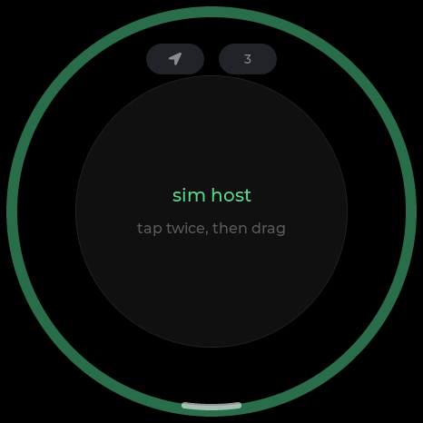
Bluetooth HID. Use the face as a touchpad, or lift it off the desk and point — the gyro drives the cursor from there.
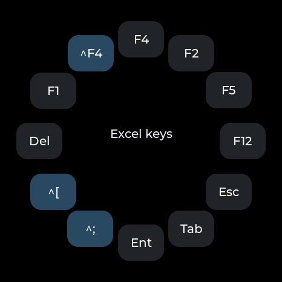
A phone's soft keyboard has no F keys, which is the real reason an Excel formula cannot be touched over RDP from a phone. Twelve of them in a ring, fired over the same Bluetooth link.
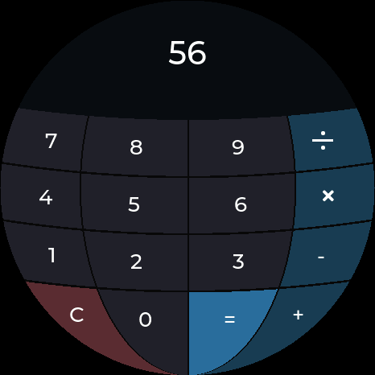
A 4 × 4 grid loses its corners on a round screen, so the digits stack in three columns down the middle and the operators take the left and right flanks — which is where the room actually is.
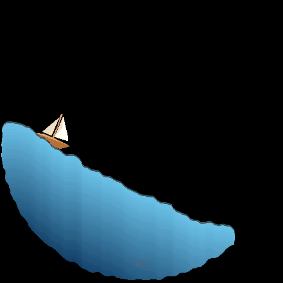
380 particles of smoothed-particle fluid in a round tank, run by the accelerometer, with a boat that rides whatever surface they make. Tilt it and it pours.
The Moon, the Earth, Jupiter and the Sun, turned by hand. The maps are NASA imagery; delete them and each body falls back to being drawn in code.
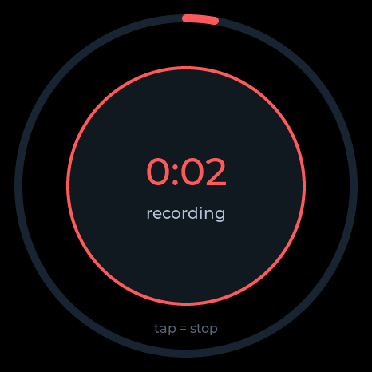
16 kHz IMA-ADPCM straight to flash, about 52 minutes of it. Plug
the badge in, press export, and it re-enumerates as a read-only USB
drive full of .WAV files.
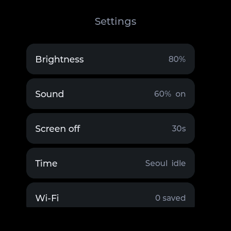
Brightness, sound, screen-off delay, time zone, Wi-Fi and Bluetooth pairing. Every row carries its own value, so nothing has to be opened just to be read.
Clock, timer, stopwatch and alarm are all one app — they are the same kind of thing, so they are four screens swiped through vertically rather than four icons on the home screen.
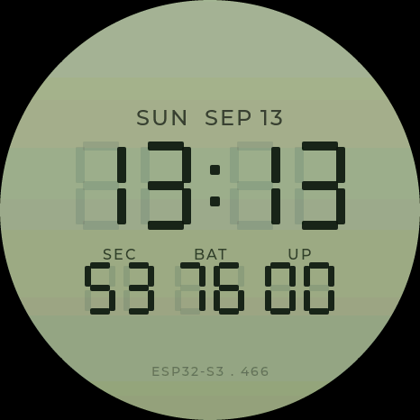
Seven segments drawn as shapes rather than a bitmap, so it is sharp at any size. Date, seconds, battery and uptime underneath. The lock screen is the same face, unlit.
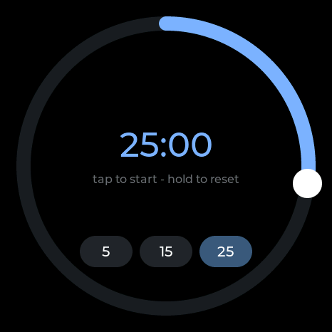
5, 15 or 25 minutes to start from. What is left is a ring closing rather than a number to read — the one thing a round screen does better than a rectangle. Tap to start, hold to reset.
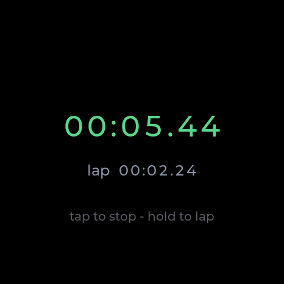
Here the digits are the point, so there is no ring. Hold to take a lap. Every character gets a fixed-width cell of its own — in one centred label a proportional font makes the number shiver.
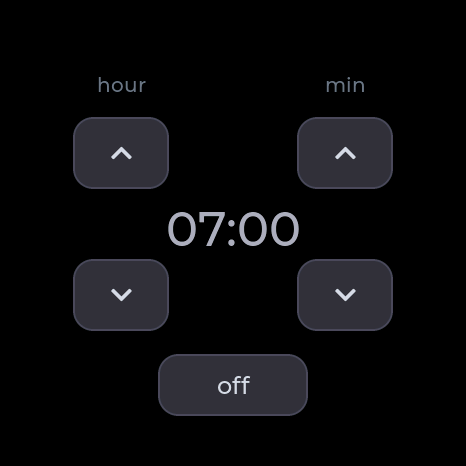
It is watched by the launcher, not the app, so it still rings with the app closed. And it stays quiet until the clock has been set: judging seven in the morning against 1970 would fire the moment you plugged it in.
None of them cost much — each moves a handful of shapes. Three of the four are played by tilting the badge, which puts an IMU that is sitting there anyway to work.
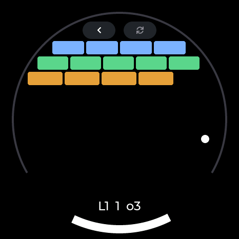
A paddle that runs along the bottom arc and bricks laid round the circle — a shape a rectangular screen cannot make. Five levels, and three balls, because losing all of it to one miss is where people put the badge down.
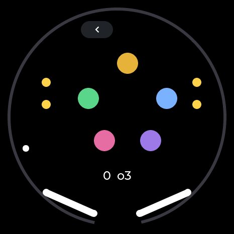
The round screen is the table. Bumpers, drop targets, and a flipper at each end of the bottom arc — tap the left or right half of the screen to swing them.
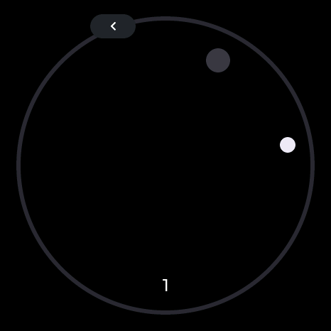
Tilt to roll it. Drop it in the hole and the next hole appears somewhere else. Nothing to it, which is the idea.
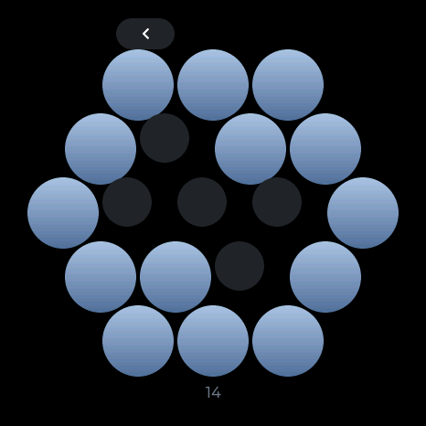
Bubble wrap. They pop on the press rather than the release, which is the whole difference between it feeling right and feeling wrong. Then they come back.
The trailing C is not a revision. Waveshare sells a plain 1.75 as well and it is a different board — this firmware is for the 1.75C and will not run on the other one.
| 1.75C — this one | 1.75 | |
|---|---|---|
| Case | CNC aluminium, badge-shaped | bare board |
| Flash | 32 MB | 16 MB |
| PSRAM | 8 MB, octal — the same on both | |
| microSD | none | TF slot |
| RTC | none | PCF85063 |
Two of those rows are load-bearing here.
18 34 40 5A 6B and nothing
at 0x51. The PCF85063 driver is still in port_esp.c
— it probes, finds nothing, and says so.The 1.75C itself is listed two ways, With Battery and Without Battery. Everything here was written and tested on the one with the cell fitted; that is where the day-per-charge figure, the battery gauge and the standby measurements come from. The firmware does not require it — the power management chip is on the board either way — but the battery-less one has not been tried here.
WiFi comes up for one reason — setting the clock, and only once the clock has gone stale — plus the scan when you first pick a network on the badge itself. Nothing is uploaded, there is no account, no telemetry, and recordings leave the board only when you plug it in and ask.
Recording other people is regulated differently depending on where you are. In some places consent from one party to the conversation is enough; in others every participant has to agree. Find out which one applies to you before you use it.
Two ways. Neither of them needs a toolchain unless you want one.
Plug the badge in with a USB-C data cable and open the web flasher. It wants Chrome or Edge — WebSerial is not in Safari or Firefox. If the Connect button never finds a port, it is usually the cable; failing that, hold BOOT, tap RESET, release BOOT.
You need ESP-IDF 5.5 and nothing else; every other dependency is fetched on the first build.
git clone https://github.com/curisama/The-Badge
cd The-Badge
cp main/secrets.example.h main/secrets.h # optional, may stay empty
idf.py build
idf.py -p /dev/ttyACM0 flash # COMx on Windowstools/setup.sh does the same and works out which OS you are on.
The first build pulls down roughly 20 MB of components and takes a while;
after that it is quick. Per-OS notes are in
docs/SETUP.md.
Check the board first. This is for the ESP32-S3-Touch-AMOLED-1.75C and its 32 MB of flash. The plain 1.75 has 16 MB and a different board support package; the partition table will not fit it. Flashing replaces everything on the board, recordings included.
The whole interface builds and runs as a desktop program, with a fake IMU and a fake battery, so the tilt games and the power screens work there as well. Most of this firmware was written that way.
python3 sim/build.py
PORT=8792 python3 sim/server.py # then open http://localhost:8792port_esp.c touching hardware directly is a bug.